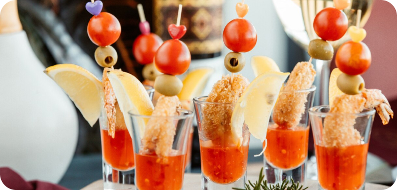
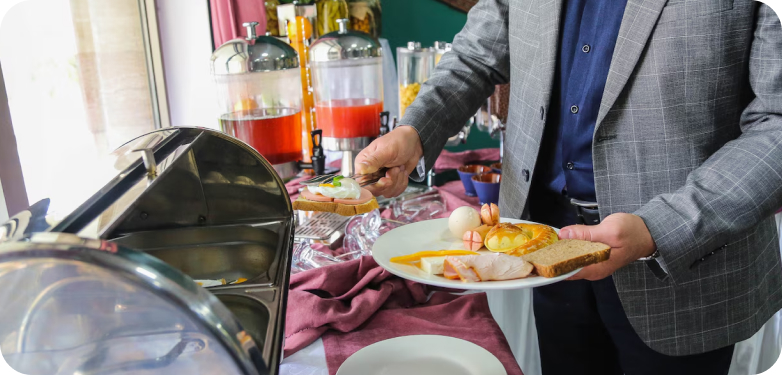
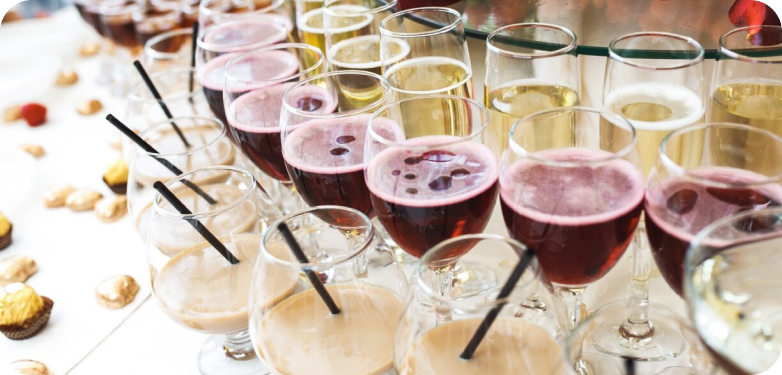
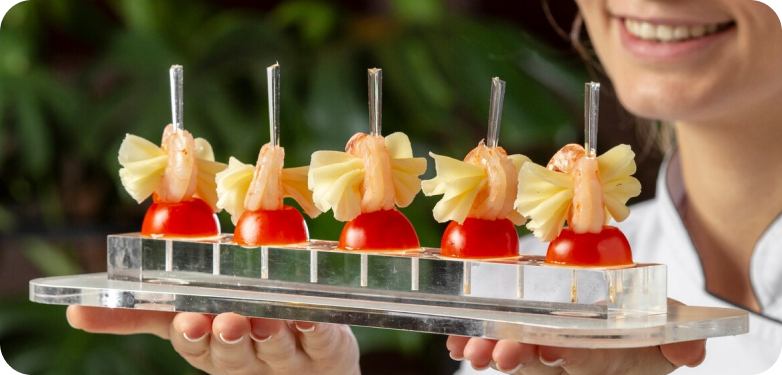

Our Blog
Exploring the dynamic landscape of catering trends, this article offers an insightful glimpse into the latest innovations and preferences shaping the realm of event food and beverage. From experiential dining concepts to eco-friendly practices, discover the trends captivating the taste buds and imaginations of event planners and guests alike.
1. Experiential Dining Experiences: Delve into the rise of experiential dining experiences, where interactive food stations, chef-led demonstrations, and immersive culinary journeys take center stage, offering guests a multisensory dining adventure.
2. Global Fusion Cuisine: Explore the fusion of global flavors and culinary traditions, as event menus increasingly feature a diverse array of international cuisines, from Asian street food-inspired bites to Mediterranean mezze platters, reflecting the growing appetite for global gastronomic adventures.
3. Plant-Based and Vegan Offerings: Highlight the growing demand for plant-based and vegan offerings, with caterers incorporating innovative plant-forward dishes and vegan alternatives to traditional favorites, catering to the rising interest in health-conscious and sustainable dining options.
4. Interactive Beverage Stations: Discuss the emergence of interactive beverage stations, where guests can craft their cocktails, sample artisanal spirits, or indulge in wine and cheese pairings, adding an element of customization and engagement to the beverage experience.
5. Eco-Friendly Practices: Shed light on the adoption of eco-friendly practices in catering, including the use of sustainable ingredients, compostable serviceware, and zero-waste initiatives, as event planners prioritize environmental responsibility and sustainability in their food and beverage offerings.
6. Gourmet Comfort Foods: Explore the resurgence of gourmet comfort foods, as event menus feature elevated versions of classic favorites such as gourmet sliders, truffle macaroni and cheese, and upscale versions of nostalgic childhood treats, offering a blend of familiarity and sophistication.
7. Artisanal and Craft Offerings: Showcase the emphasis on artisanal and craft offerings, with caterers partnering with local artisans, breweries, and wineries to showcase small-batch products, artisanal cheeses, craft beers, and specialty spirits, celebrating the craftsmanship and authenticity of locally sourced ingredients.
8. Customization and Personalization: Discuss the trend towards customization and personalization in event catering, with caterers offering bespoke menus tailored to individual preferences, dietary restrictions, and event themes, allowing hosts to create unique and memorable culinary experiences.
9. Food Presentation and Styling: Highlight the importance of food presentation and styling in event catering, as caterers elevate their culinary offerings with creative plating techniques, artistic garnishes, and Instagram-worthy food displays, enhancing the visual appeal and aesthetic allure of the dining experience.
10. Tech-Infused Catering Experiences: Explore the integration of technology into catering experiences, with the rise of digital menu platforms, interactive food ordering apps, and virtual tasting sessions, catering to the tech-savvy preferences of modern event attendees and streamlining the catering process.s and their guests.
